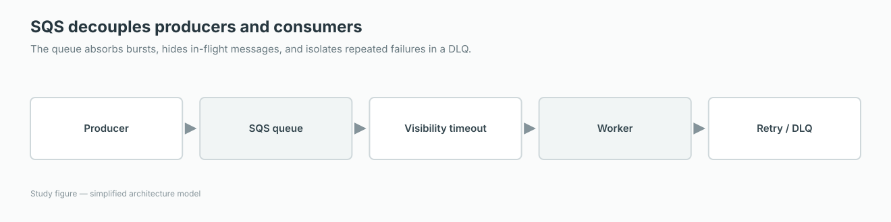

Operate a small queue to see the difference between receiving, hiding, deleting, retrying, and dead-lettering a message.
Queue state
Clock
0s
Visible
0
In flight
0
Main queue
WORKER
Dead-letter queue
Send a message to begin.
Guided explanation
How SQS retries messages safely
SQS decouples producers from consumers. When a consumer receives a message, the message is hidden temporarily—not deleted. Successful processing must end with an explicit delete.

The queue absorbs bursts, hides in-flight messages, and isolates repeated failures in a DLQ.
1 · Start here
The big idea: receive, hide, process, delete
The visibility timeout prevents multiple consumers from normally processing the same message at the same moment. If processing fails or the consumer crashes, the message becomes visible again after the timeout.
Standard queues provide at-least-once delivery, so consumers must be idempotent: processing a duplicate should not create an incorrect result.
2 · Step by step
What AWS does
A producer sends a message to the queue.
A consumer receives it, and SQS hides it for the visibility-timeout period.
The consumer processes the work and deletes the message on success.
If it is not deleted, it becomes visible again. After too many receives, a redrive policy can move it to a dead-letter queue.
3 · Architecture example
Follow the request
Order API→SQS queue→Worker fleet→Database→Dead-letter queue for failures
An order service accepts a request immediately, writes a message to SQS, and lets Auto Scaling workers process orders at a sustainable rate.
4 · When to use it
Choose it for these requirements
Use SQS to buffer bursts, isolate failures, and let producers and consumers scale independently.
Use a FIFO queue when strict ordering and deduplication are required.
Use long polling to reduce empty responses and unnecessary API calls.
5 · Exam tip
Words that should guide your choice
The visibility timeout should be longer than normal processing time. With Lambda as the consumer, AWS recommends additional room for retries and throttling.
6 · Common mistake
Do not confuse these ideas
Receiving a message does not remove it. If the application forgets to delete successful messages, they will be processed again.